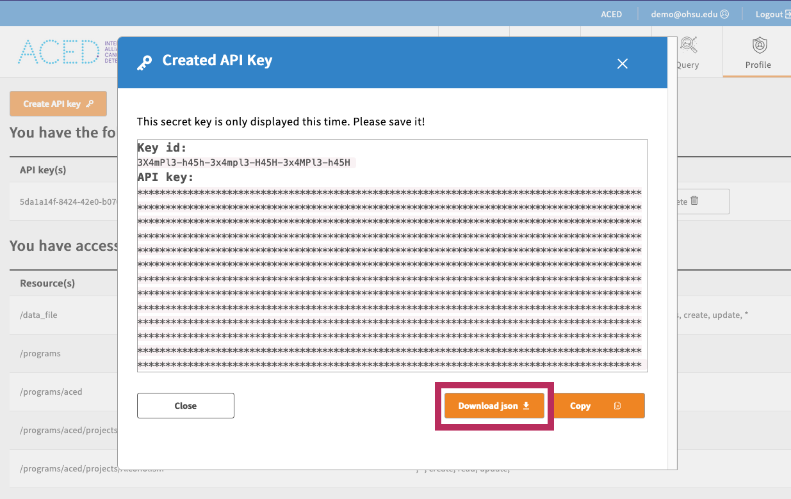

Requirements¶
1. Download gen3-client¶
gen3-client to upload and download files to the gen3 platform. Since the ACED-IDP is built on gen3, gen3-client is used in gen3-tracker (g3t) for the same purpose. See the instructions below for how to download gen3-client for your operating system.
Installation Instructions¶
- Download the macOS version of the gen3-client.
- Run the gen3-client pkg, following the instructions in the installer.
- Open a terminal window.
- Create a new gen3 directory:
mkdir ~/.gen3 - Move the executable to the gen3 directory:
mv /Applications/gen3-client ~/.gen3/gen3-client - Change file permissions:
chown $USER ~/.bash_profile - Add the gen3 directory to your PATH environment variable:
echo 'export PATH=$PATH:~/.gen3' >> ~/.bash_profile - Refresh your PATH:
source ~/.bash_profile - Check that the program is downloaded: run
gen3-client
- Download the Linux version of the gen3-client.
- Unzip the archive.
- Open a terminal window.
- Create a new gen3 directory:
mkdir ~/.gen3 - Move the unzipped executable to the gen3 directory:
~/.gen3/gen3-client - Change file permissions:
chown $USER ~/.bash_profile - Add the gen3 directory to your PATH environment variable:
echo 'export PATH=$PATH:~/.gen3' >> ~/.bash_profile - Refresh your PATH:
source ~/.bash_profile - Check that the program is downloaded: run
gen3-client
- Download the Windows version of the gen3-client.
- Unzip the archive.
- Add the unzipped executable to a directory, for example:
C:\Program Files\gen3-client\gen3-client.exe - Open the Start Menu and type "edit environment variables".
- Open the option "Edit the system environment variables".
- In the "System Properties" window that opens up, on the "Advanced" tab, click on the "Environment Variables" button.
- In the box labeled "System Variables", find the "Path" variable and click "Edit".
- In the window that pops up, click "New".
- Type in the full directory path of the executable file, for example:
C:\Program Files\gen3-client - Click "Ok" on all the open windows and restart the command prompt if it is already open by entering cmd into the start menu and hitting enter.
2. Configure a gen3-client Profile with Credentials¶
To use the gen3-client, you need to configure gen3-client with API credentials downloaded from the Profile page.
Log into the website. Then, download the access key from the portal and save it in the standard location ~/.gen3/credentials.json

From the command line, run the gen3-client configure command:
Run the gen3-client auth command to confirm you configured a profile with the correct authorization privileges. Then, to list your access privileges for each project in the commons you have access to:
gen3-client auth --profile=aced
# 2023/12/05 15:07:12
# You have access to the following resource(s) at https://aced-idp.org:
# 2023/12/05 15:07:12 /programs/aced/projects/myproject...
3. Install gen3-tracker (g3t)¶
The gen3-tracker (g3t) tool requires a working Python 3 installation no older than Python 3.12. Check your version with python3 --version. If needed, download a compatible version of Python 3.
Optionally, create a virtual environment using venv or conda for g3t. We will use venv in the instructions.
Run the following in your working directory to install the latest version of g3t from the Python Package Index:
You can verify the installation was successful by then running the g3t command with the expected output being the latest version:
Upgrading g3t¶
This version should match the latest version on the PyPi page. If it is out of date, run the following to upgrade your local version:
Configuration¶
g3t uses the gen3-client configuration flow.
After configuration, you can either specify the --profile or set the G3T_PROFILE=profile-name environmental variable.
Testing the configuration¶
The command g3t ping will confirm that the access key and gen3-client have been configured correctly
A successful ping will output something like:
msg: 'Configuration OK: Connected using profile:aced'
endpoint: https://aced-idp.org
username: someone@example.com
bucket_programs:
...
your_access:
...
With g3t completely set up, see the Quickstart Guide for how to upload and download data to a project.